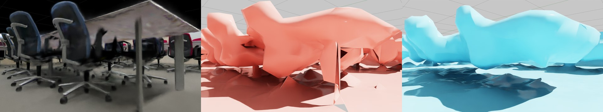
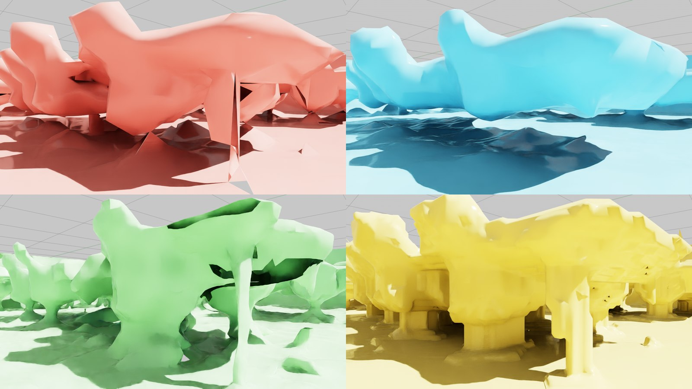
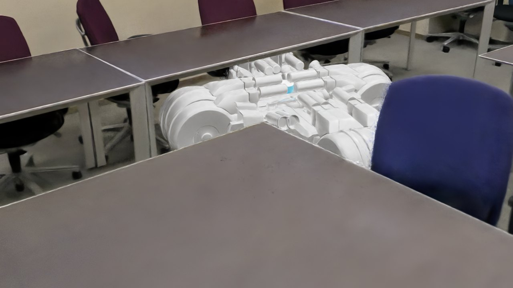
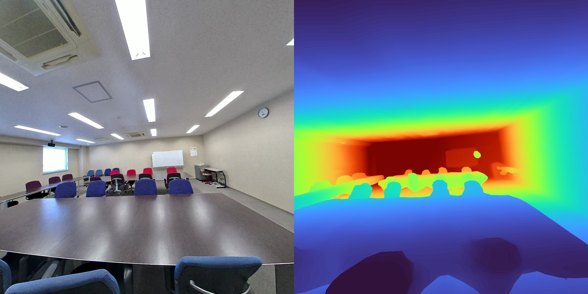

01 3DGSをシミュレーションに使うときの二つの壁
3DGSは見た目の再現に関しては圧倒的です。ただしそれは「写真と一致するように最適化した」結果であって、「形が正しい」わけではありません。この違いが、ロボットのシミュレーションでは具体的な事故として表れます。
壁1：空中の粒が、ロボットの視界を汚す
3DGSには実体のない場所にガウシアンが残ることがあります。見る角度によっては絵として辻褄が合ってしまうため、学習の途中で消えずに生き残ります。
ここで誤解しやすいのですが、3DGS自体は当たり判定を持たないので、フローターがロボットにぶつかることはありません。問題はそこではなく「ロボットのカメラに映り込む」ことです。カメラ画像から行動を学習させる場合、視界に実在しない粒が漂っていれば、それは学習データのノイズになります。加えて3DGSから深度やメッシュを起こす場合には、この粒が形状として拾われてしまいます。
壁2：当たり判定の穴から、ロボットがすり抜ける
当たり判定を作るには面の情報が要りますが、3DGSは粒の集合なので面を持ちません。そこでスキャナが出力するメッシュを使うことになりますが、こちらには別の問題があります。実際に計測したところ、スキャナ純正のメッシュは全エッジの4.86%が「どの面にも閉じていない縁」でした。つまり穴だらけです。
ただし穴の分布には強い偏りがあります。真上から光線を落として床の有無を調べると、丁寧にスキャンした部屋の中は99.90%が塞がっていたのに対し、通路など観測が薄い場所では床として成立していた面積が22%しかありませんでした。つまり穴は「スキャンが行き届いた範囲の外」に集中します。見た目には同じ床でも、当たり判定として使えるかは場所によって別物だということです。
観測が薄い場所へロボットを置くとこうなります。落下は止まらず、加速しながら床下38mまで進みました。
02 NVIDIAの答えと、そこにある前提
2026年8月、NVIDIAがこの問題への解決策を公開しました（日本語の解説記事）。Niantic Spatialの再構成パイプラインを使い、1回の撮影からガウシアンとメッシュを同じ座標系で同時に出力するという方式です。前者がロボットの見る映像、後者が衝突判定になります。ガウシアンをIsaac Simで扱う基盤はOmniverse NuRecとして公開されています。
肝は「独自の深度モデルで形状を拘束する」という部分でした。見た目の一致だけを最適化すると浮遊粒子や床の穴が残るので、深度の情報で形を押さえつける。学習の枠組みでいえば、これは深度を教師信号として与える正則化にあたります。研究の世界ではDN-Splatterなどが同じ系譜で、実装も公開されています。
03 二つの道
実測LiDARがある場合、取れる道は二つあります。どちらが良いかは、やってみないと分かりません。
| 道A：後から削る | 道B：学習し直す | |
|---|---|---|
| やること | 完成した3DGSの粒を、LiDARから遠いものだけ消す | LiDAR深度を教師にして3DGSを再学習する |
| 所要時間 | 数分 | 30,000ステップの学習 |
| 期待 | 手軽だが、粒を消すだけなので限界がありそう | NVIDIAと同じ原理なので、本命はこちら |
直感では道Bが勝ちそうです。学習の中で形を直すほうが、後から消すより根本的だからです。両方を実際に作って、同じ物差しで測りました。
04 道A：実測LiDARで後から削る
考え方は単純です。ガウシアン一粒ごとに、LiDARが測った点群までの距離を計算し、遠すぎるものを消す。実測面から離れた場所にある粒は、実体のないフローターだからです。
会議室スキャン（93万6,016ガウシアン）で測った分布がこちらです。
| LiDAR面からの距離 | 値 | 意味 |
|---|---|---|
| 中央値 | 6mm | 大半の粒は実測面にぴたりと乗っている |
| 90%点 | 18mm | 表面の毛羽立ちは数cmの帯に収まる |
| 10cmより遠い粒 | 8,406個（0.90%） | これがフローター |
ここで一つ分かったことがあります。LiDARスキャナ由来の3DGSは、そもそもフローターが1%未満と少ないのです。LiDARの点を出発点として学習が始まるので、最初から実測面の近くに粒が置かれるからです。カメラだけで作る3DGSとは前提が違います。
消した粒だけを表示したのが冒頭の画像です。半透明のゴミではなく不透明度0.93という「濃い」実体アーティファクトで、床下や壁の向こうにゴースト形状として溜まっていました。除去の前後を同じカメラで撮り比べても、机・椅子・ブラインドといった実在物は消えていません。
当たり判定は、点群から作り直す
穴だらけのスキャナ純正メッシュを使う代わりに、LiDAR点群からPoisson再構成で面を張り直します。この手法は閉じた面を作るので、原理的に穴が開きません。
候補をいくつか作って比較したところ、結果ははっきりしていました。
| 作り方 | 三角形数 | 穴（境界エッジ） | LiDARとのズレ | ロボット落下試験 |
|---|---|---|---|---|
| スキャナ純正メッシュ | 19,344 | 1,444本 | — | 落下する |
| 3DGSからボクセル化 | 1,825,066 | 0本 | 3.4cm | 合格 |
| LiDAR点群からPoisson | 94,292 | 0本 | 2.3cm | 合格 |
Poissonが精度も軽さも両取りでした。ボクセル化と比べて19分の1の軽さで、精度は上です。0.1mの立方体を56個ばらまく落下試験でも、56個すべてが床の上で静止しました。
細い脚は、どちらのメッシュにも作れない
ただし当たり判定には、水密性とは別の限界があります。机の脚や椅子のような細い構造は、どちらの作り方でも再現できません。

数字でも同じことが出ます。床から15〜55cm（脚の高さ）の帯で、実際に物がある割合を測ると次のとおりでした。
| 脚の高さ帯の占有率 | 値 | 意味 |
|---|---|---|
| 3DGS（実際の形） | 27.2% | これが正解 |
| スキャナ純正メッシュ | 18.6% | 脚が足りない＝すり抜ける |
| LiDAR-Poisson | 38.2% | 埋めすぎ＝机の下に入れない |
Poissonは閉じた面を作る手法なので、細い脚を4本立てるより、机の下ごと塞いでしまう方が「滑らかな閉じた面」として自然だからです。水密性と引き換えの性質で、避けられません。
ロボットを机に向かって走らせると挙動の違いがそのまま出ます。純正メッシュでは天板の塊に当たって手前で止まり、Poissonでは埋まった斜面を押し上がって別の位置で止まりました。どちらも「机の脚に当たって止まる」という正しい挙動ではありません。
ここで一度は「スキャンから作るメッシュは床・壁まで」と割り切りかけたのですが、さらに2つの方法を試したところ、決定打が見つかりました。
決定打：穴だけ塞いで、脚は残す
発想を変えます。スキャナ純正メッシュは「穴だらけ」ですが、脚は部分的に持っています。ならば、ゼロから面を作り直すのではなく、純正メッシュの穴だけを塞げばいい。
手順は3段階です。純正メッシュを3cmのボクセルに変換し、モルフォロジー処理のクロージング（膨張→収縮）で小さな穴を封じ、marching cubesで面に戻す。使うのは古典的な画像処理の道具だけで、実行時間は数十秒です。

| 手法 | 穴 | 精度（中央値） | 脚の占有率 （正解27.2%） | 落下試験 |
|---|---|---|---|---|
| スキャナ純正 | 4.86% | — | 18.6% | 落下 |
| Poisson | 0% | 2.3cm | 38.2% | 合格 |
| NKSR（学習型） | 1.49% | 2.5cm | 18.3% | — |
| モルフォロジー修復 | 0% | 1.1cm | 29.7% | 合格 |
結果は全指標で最良でした。穴ゼロ（クロージング後の閉じた体積からmarching cubesで面を作るため、構成的に水密）、精度はPoissonの2倍、脚の占有率は正解に最も近い29.7%。0.1mの立方体56個の落下試験も全数静止です。
NVIDIAの学習型再構成（NKSR）も試しましたが、脚の再現は18.3%と純正メッシュ並みで、水密性も失われました。学習した事前知識より、「既にある脚を消さない」という単純な方針が勝ったことになります。
それでも椅子のキャスターのような数cmの構造までは残りません。ミリ単位で形が要る物はCGモデルを重ねる——この使い分け自体は変わりませんが、その線引きが「机の脚」から「キャスター」まで細かくなりました。

05 道B：深度を教師にして学習し直す
NVIDIAと同じ原理を、実測LiDARで試します。ただしここに一つ大きな障害がありました。学習には「どの位置から撮った写真か」というカメラの位置姿勢が必要ですが、スキャナの出力からこれが失われていました。
まずカメラ位置を復元する
写真からカメラ位置を復元する標準手法はCOLMAPですが、163枚中6枚しか復元できず失敗しました。無地の壁が多い室内は、従来の特徴点抽出が苦手とする条件です。
そこで学習ベースの特徴点抽出（DISK）とマッチング（LightGlue）に切り替えたところ、126枚の復元に成功しました。ここは素直に新しい手法が効きます。
解決策は遠回りに見えて確実な方法でした。すでにLiDAR座標系にある3DGSから48枚の絵をレンダリングし、それを「位置が分かっている写真」として実写と照合する。これで一枚ずつ実寸のカメラ位置が求まり、縮尺が確定しました。

復元したカメラ位置とLiDAR由来の深度マップを揃えて、DN-Splatterで30,000ステップ学習しました。学習は完走し、メッシュの同時出力にも成功しています。
06 比較結果
両方を同じ物差し（LiDAR点群までの距離）で測りました。結果は予想と逆でした。
当たり判定として
| 指標 | 道A：LiDARから直接 | 道B：学習し直し |
|---|---|---|
| 三角形数 | 94,292 | 9,585,384（102倍重い） |
| 穴（境界エッジ） | 0本＝完全に閉じている | 1,013,769本（6.81%） |
| LiDARとのズレ（中央値） | 2.3cm | 22.0cm |
見た目として
| 指標 | 道A：元データ＋除去 | 道B：学習し直し |
|---|---|---|
| LiDARとのズレ（中央値） | 0.6cm | 19.8cm（33倍悪い） |
| フローター（10cm超） | 0.68% | 62.47%（92倍多い） |
両面で道Aの圧勝でした。手軽なほうが、本命だと思っていたほうに勝ったことになります。
07 なぜこうなったのか
結果を「DN-Splatterが劣る」と読むのは間違いです。原因はこちらが与えた入力の質にあります。
3DGSの学習はカメラ位置がサブセンチ単位で合っていることを前提にした手法です。今回復元できた位置の精度は中央値13.2cmでした。13cmずれた教師データで学習すれば、当然ぼやけた結果にしかなりません。加えて画像も126枚だけで、元の3DGSがスキャナ純正パイプラインで全フレームとLiDAR初期値を使って作られているのに対し、あまりに不利な条件でした。
つまり測れたのは「DN-Splatterの実力」ではなく、「復元したカメラ位置で学習し直すと、元データには勝てない」という事実です。スキャナ純正の正確なカメラ位置が手に入れば、結論は変わりえます。
そのうえで、より本質的な理由もあります。道Bのメッシュは「学習した3DGSをレンダリングした深度」から作られるので、品質の上限が3DGSの学習結果に縛られます。対して道AはLiDARの実測値を直接使います。センサーの実測値を持っているなら、間に学習表現を挟むぶんだけ情報が落ちる、というのは考えてみれば当然のことでした。
08 まとめ
LiDARスキャナで撮ったデータをロボットのシミュレーションに使うなら、手順はこうなります。
- フローターは、LiDARからの距離で消す ── 一粒ずつ実測面までの距離を測り、10cmより遠いものを削除します。会議室では0.90%が該当しました。
- 当たり判定は、スキャナ純正メッシュの「穴だけ」を塞ぐ ── ボクセル化→クロージング→marching cubesの3段階（数十秒）。穴ゼロ・精度1.1cm・机の脚も残ります。純正メッシュが無いスキャンではLiDAR点群からのPoisson再構成で代用します。
- 学習し直す必要はない ── 少なくともカメラ位置が正確に得られない状況では、後処理のほうが速くて良い結果になります。
この手順は再学習を伴わないので、数分で全スキャンに適用できます。依存するのもPythonと点群処理ライブラリだけで、GPU学習環境の構築が要りません。運用に乗せやすいという意味でも、実務ではこちらが現実的です。
3DGSをIsaac Simに読み込む基本手順は別の記事にまとめています。3DGS単体では持てない情報（当たり判定・セマンティックラベル）の扱い方も、そちらで整理しました。
ロケハン3Dでは、実在の空間を
シミュレーションに使える形でスキャンします
LiDARと写真を同時に取得するため、見た目と実測形状の両方が揃ったデータになります。ロボット検証・デジタルツイン・映像制作まで、用途に合わせた形式でお渡しします。
スキャンの相談をする →